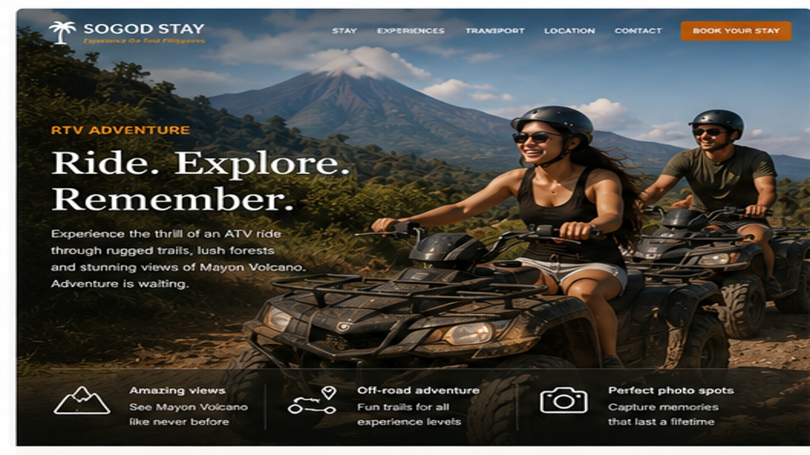

Grassland Trail
Easy first taste of ATV riding.
about ₱500Approx. 20–30 minutes. Reference operator price.
MAYON ATV ADVENTURE
Get off the paved road and experience the volcanic landscape around Mayon by ATV. Choose a short beginner trail or spend a few hours riding rougher lava routes with one of Albay's most famous views in the background.
THE EXPERIENCE
ATV operators around Cagsawa and the Mayon area offer routes across grass, forest tracks, riverbeds and volcanic terrain. You normally ride your own ATV, following a guide who knows the route and conditions.
A couple or two friends can ride side by side on separate ATVs, which makes this a particularly fun shared experience. Wear practical clothes and expect dust, mud or water depending on the trail and weather.
For most visitors, the Green Lava or Black Lava routes are where this changes from a quick activity into a proper Mayon adventure.
TRAIL OPTIONS
Easy first taste of ATV riding.
about ₱500Approx. 20–30 minutes. Reference operator price.A longer, scenic volcanic route.
about ₱1,850Approx. 2–2.5 hours. Reference operator price.Rougher terrain and a bigger adventure.
about ₱2,250Approx. 2–3 hours. Reference operator price.BEFORE YOU RIDE
Follow the operator's briefing and safety instructions.
Wear shoes and clothes that can handle dust, mud and water.
Morning often gives you a better chance of seeing Mayon's summit clearly.
The scenery is part of the reason to choose a longer route.
MAKE MAYON AN ADVENTURE
Add Mayon ATV to your request and we can help coordinate it with your day around Albay.
Plan my ATV adventure